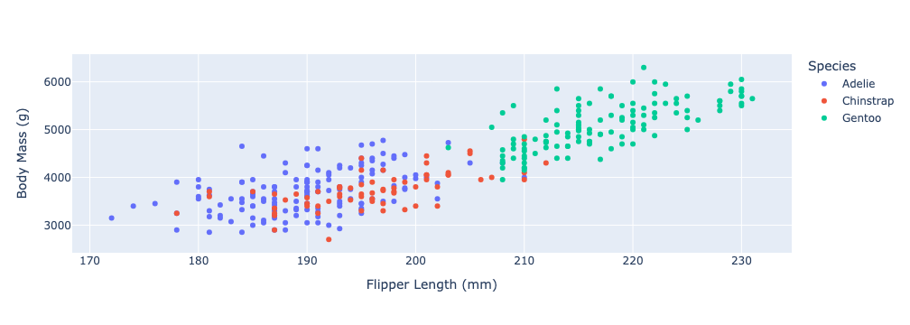
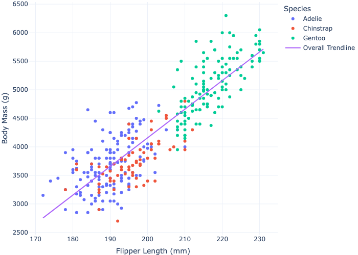
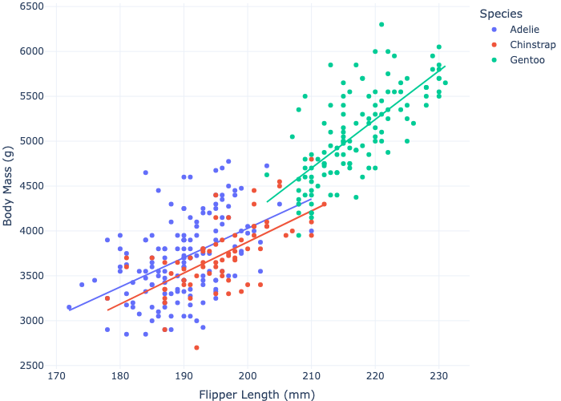
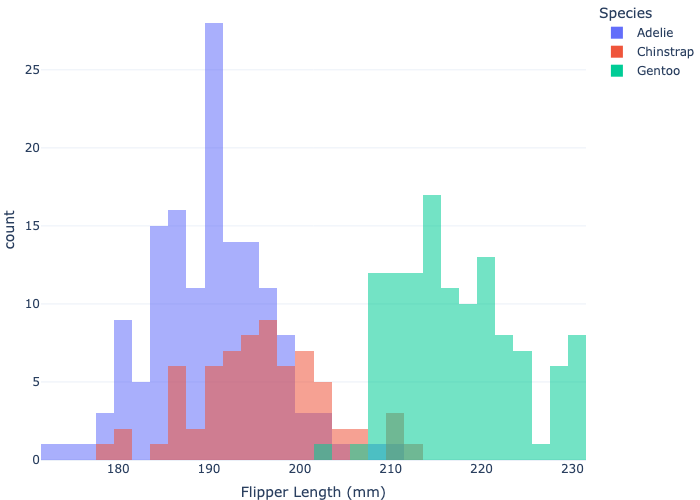

import pandas as pd
url = "https://raw.githubusercontent.com/pic16b-ucla/24W/main/datasets/palmer_penguins.csv"
penguins = pd.read_csv(url)
Hello, today I am going to be explaining how to construct an interesting data visualization of the Palmer Penguins data set.
Data Retrieval and Cleaning
We’ll start by first reading the data into Python via the github url that contains the data.
Let’s inspect our dataframe using .head() and .shape.
penguins.head()| studyName | Sample Number | Species | Region | Island | Stage | Individual ID | Clutch Completion | Date Egg | Culmen Length (mm) | Culmen Depth (mm) | Flipper Length (mm) | Body Mass (g) | Sex | Delta 15 N (o/oo) | Delta 13 C (o/oo) | Comments | |
|---|---|---|---|---|---|---|---|---|---|---|---|---|---|---|---|---|---|
| 0 | PAL0708 | 1 | Adelie Penguin (Pygoscelis adeliae) | Anvers | Torgersen | Adult, 1 Egg Stage | N1A1 | Yes | 11/11/07 | 39.1 | 18.7 | 181.0 | 3750.0 | MALE | NaN | NaN | Not enough blood for isotopes. |
| 1 | PAL0708 | 2 | Adelie Penguin (Pygoscelis adeliae) | Anvers | Torgersen | Adult, 1 Egg Stage | N1A2 | Yes | 11/11/07 | 39.5 | 17.4 | 186.0 | 3800.0 | FEMALE | 8.94956 | -24.69454 | NaN |
| 2 | PAL0708 | 3 | Adelie Penguin (Pygoscelis adeliae) | Anvers | Torgersen | Adult, 1 Egg Stage | N2A1 | Yes | 11/16/07 | 40.3 | 18.0 | 195.0 | 3250.0 | FEMALE | 8.36821 | -25.33302 | NaN |
| 3 | PAL0708 | 4 | Adelie Penguin (Pygoscelis adeliae) | Anvers | Torgersen | Adult, 1 Egg Stage | N2A2 | Yes | 11/16/07 | NaN | NaN | NaN | NaN | NaN | NaN | NaN | Adult not sampled. |
| 4 | PAL0708 | 5 | Adelie Penguin (Pygoscelis adeliae) | Anvers | Torgersen | Adult, 1 Egg Stage | N3A1 | Yes | 11/16/07 | 36.7 | 19.3 | 193.0 | 3450.0 | FEMALE | 8.76651 | -25.32426 | NaN |
penguins.shape(344, 17)Next, the dataframe is a bit messy so let’s clean it up.
Looking at the Species column, we can see that we only need to take the first part of the string to get the species name, so let’s do that.
penguins["Species"] = penguins["Species"].str.split().str.get(0).str.split() splits the string into each word and puts them into a list, and .str.get(0) retrieves the 0th item of that list, which is the species name that we want.
Okay, now let’s deal with some of the NAs in the data frame. We’ll use .dropna() on the Body Mass (g) and Sex columns to get rid of their NA values.
penguins = penguins.dropna(subset = ["Body Mass (g)", "Sex"])Also, the Sex column, which should either have MALE or FEMALE, has a few weird entries, so let’s deal with those as well.
penguins = penguins[penguins["Sex"] != "."]Finally, since there are so many different observations, let’s narrow down our data to just a few. For the purposes of this tutorial, I’ll use just 7: Species, Island, Sex, Culmen Length (mm), Culmen Depth (mm), Flipper Length (mm), and Body Mass (g).
penguins = penguins[["Species", "Island", "Sex", "Culmen Length (mm)", "Culmen Depth (mm)", "Flipper Length (mm)", "Body Mass (g)"]]
penguins.head()| Species | Island | Sex | Culmen Length (mm) | Culmen Depth (mm) | Flipper Length (mm) | Body Mass (g) | |
|---|---|---|---|---|---|---|---|
| 0 | Adelie | Torgersen | MALE | 39.1 | 18.7 | 181.0 | 3750.0 |
| 1 | Adelie | Torgersen | FEMALE | 39.5 | 17.4 | 186.0 | 3800.0 |
| 2 | Adelie | Torgersen | FEMALE | 40.3 | 18.0 | 195.0 | 3250.0 |
| 4 | Adelie | Torgersen | FEMALE | 36.7 | 19.3 | 193.0 | 3450.0 |
| 5 | Adelie | Torgersen | MALE | 39.3 | 20.6 | 190.0 | 3650.0 |
Wow, much better. Now we can move onto our visualization.
Visualization
Let’s explore the relationship between Flipper Length and Species, and Body Mass.
I’m curious, does Body Mass depend on Flipper length and/or Species?
Let’s import the necessary packages.
import plotly
import plotly.io as pio
from plotly import express as pxScatterplot
I’ll plot Body Mass vs Flipper length and color the points by Species using the px.scatter function.
fig = px.scatter(data_frame = penguins,
x = "Flipper Length (mm)",
y = "Body Mass (g)",
color = 'Species'
)
fig.show()
We can see that there does seem to be a positive linear relationship between Flipper Length and Body Mass! Also, it appears that the Gentoo species tend to be much heavier and have longer flippers than Adelie and Chinstrap which are very similar. Let’s make our graph a bit more fancy and show this linear trend on our graph using trendline="ols".
fig = px.scatter(data_frame = penguins,
x = "Flipper Length (mm)",
y = "Body Mass (g)",
color = "Species",
trendline="ols",
trendline_scope="overall",
hover_name = "Species",
hover_data = ["Island", "Sex"],
width = 700,
height = 500,
template = 'plotly_white'
)
fig.update_layout(margin={"r":0, "t":0, "l":0, "b":0})
fig.show()
hover_name = "Species"makes it so the species name is the title displayed on hoverhover_data = ["Island", "Sex"]adds the Island and Sex to be displayed on hoverwidthandheightcontrol the dimensions of the plottemplate = 'plotly_white'makes a simple white themefig.update_layout(margin={"r":0, "t":0, "l":0, "b":0})removes unnecessary whitespace
We can also make the trendline apply for each species by change the trendline_scope= to "trace"
fig = px.scatter(data_frame = penguins,
x = "Flipper Length (mm)",
y = "Body Mass (g)",
color = "Species",
trendline="ols",
trendline_scope="trace",
hover_name = "Species",
hover_data = ["Island", "Sex"],
width = 700,
height = 500,
template = 'plotly_white'
)
fig.update_layout(margin={"r":0, "t":0, "l":0, "b":0})
fig.show()
Nice! From this addition we can gather that Gentoo penguins tend to have a greater body mass
increase with flipper length increase than Adelie and Chinstrap which have a similar tend.
Histogram
Let’s go one step more and look at just Flipper Length vs Species with a histogram, using the px.histogram function.
fig = px.histogram(penguins,
x = "Flipper Length (mm)",
color = "Species",
opacity = 0.55,
nbins = 30,
barmode = "overlay",
width = 700,
height = 500,
template = 'plotly_white')
fig.update_layout(margin={"r":0,"t":0,"l":0,"b":0})
fig.show()
opacityandnbinscontrol how transparent each bin is and the number of bins, respectivelybarmodeselects the format of the histogram;"overlay"shows the bars on top of each other, whereas"group"shows them with space in between, andstackedshows the counts as a stack of the colors
This looks good! It shows us what we had learned before from the scatterplot, that the Gentoo have longer flipper lengths on average. It also makes clear that the average flipper length for Chinstraps is slightly more than that of Adelie, which was hard to see before with just the scatterplot. Using more than one visualization can help us understand the data better!
That’s it for the tutorial! I hope this was helpful and thanks for reading!